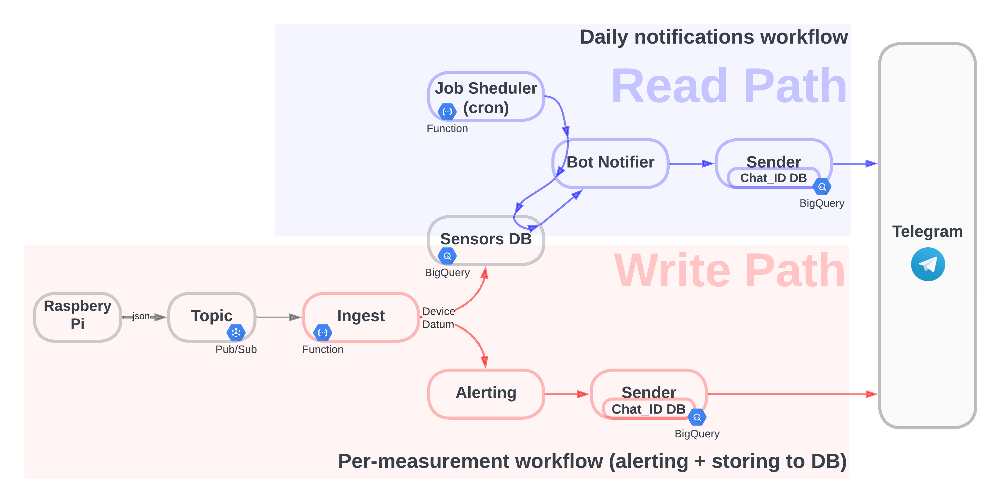

Intro / Overview¶
In this tutorial I am going to create a Temperature Monitoring and Alerting system that will:
- collect data from multiple temperature sensors of remote IoT devices RaspberryPi
- store the data in a DB Google Cloud BigQuery
- and notify users via a messenger Telegram
The final result:

Architecture & Design principles¶
As you can see on the diagram below, there are two main data processing paths:
- write path what happens when there is new data from a sensor: we store data and check if we need to send an alert
- read path what happens on cron: we read data for the last 24 hours, create a plot and notify users in a group chat via Telegram.

Code-wise, I will focus on these main areas:
- fault-tolerance: for example:
- all operations will be implemented idempotently and with retries.
- all errors will be propagated end-to-end (an error occured on RaspberryPi will be delivered via Telegram).
- extensibility: for example:
- the
Ingestmodule above will notify all subscribers via a uniform interface; BotNotifierandAlertingare parameterised with a genericSenderinterface that can have many implementations (one of them, being Telegram).
- the
- unit-tests: running a wide gamut from simple unit-tests to unit-test with mocks & patches,
as well as semi-manual integration tests.
- For example, we will check that
Alertingcallssend()function of theSenderinterface if temperature drops below a threshold.
- For example, we will check that
Below is a brief description of each of the components form the diagram above.
Components¶
Raspberry Pi¶
I will use RaspberryPi with two attached (physical) temperature sensors.
It has a service (daemon) that continuously collects measurements from the sensors and sends them via an HTTP request to a google function, which publishes them to a Pub/Sub topic.
Setup of RaspberryPi is desribed here.
Topic¶
Google Pub/Sub topic serves as a buffer/queue between producers (RaspberryPi) and consumer (Google
Cloud Function, Ingest on the diagram above). The latter is triggered on each message in the topic.
We create and configure the topic programmatically.
Ingest¶
This is the main entry point for all incoming data from IoT devices.
Ingest
canonicalises incoming json into our
“standard” python
dataclass DeviceDatum
that is used throughout the project, and which is one of the main data-types.
Ingest is
parameterised with a list of abstract
consumer interfaces
(in our case, there are two consumers:
sensor_db and
bot_alerting)
and then notifies each of them with
DeviceDatum message.
Alerting¶
Alerting
is parameterised with the
Sender interface,
Alerting
implements the Consumer
interface and receives
DeviceDatum
from Ingest.
It then checks if temperature is lower than a threshold.
If the temperature is lower, it uses
Sender to notify users.
Sender¶
Sender is an abstract interface that allows the code to notify users in a messanger-agnostic way.
I will have just one implementation of the interface — Telegram.
SensorsDB¶
sensor_db
implements the consumer interface,
receives DeviceDatum
from Ingest and uses
sensors_db_bg
to store data in BigQuery.
Job Scheduler cron¶
I register
on_cron function in
Cloud Cron service. The function uses
bot_notifier
for regular daily notifications.
How to setup Google Cloud Cron see here.
Bot Notifier¶
bot_notifier is
parameterised with a Sender,
then, using
sensors_db_bq
it retrieves data from the database for the last 24 hours and creates a plot with a text message.
It then uses Sender
(which, in our case, is
telegram_sender)
to send message to a group chat.
Telegram¶
How to create Telegram bot and register a webhook, see here.
Virtual machine¶
In order to be able to ssh to RaspberryPi, I need an intermediate VM with a static public IP address (I will use it to setup a reverse ssh tunnel).
How to provision a virtual machine in Google Cloud you can find here.